Krótka historia voice agentów: od kichającego kota do maszyn wrażliwych na emocje...
Pamiętacie słynny „efekt Cher?”
Bo ja wciąż pamiętam, kiedy w 1998 po raz pierwszy usłyszałem w radiu ten kawałek. Pierwsze wrażenie – coś tu jest nie tak z tym głosem! Cher niby tu po prostu śpiewa, ale jej wokal jakoś dziwnie skacze pomiędzy nutami, miejscami brzmi jak automat – i na pewno nie jest to naturalny głos człowieka, ale coś przetworzonego przez maszynę.
Tak właśnie brzmiał znany już branży muzycznej AutoTune – urządzenie służące do przetwarzania i korekcji dźwięku. Wokalista/ka dzięki niemu zawsze trafia w nuty. Producenci początkowo zaprzeczali, że w ogóle go używają, ale od „Believe” – gdzie celowo został wyeksponowany i „przesterowany” - ten charakterystyczny dźwięk zdominował dekady popkultury. Sam zaś AutoTune to daleki potomek technologii, która powstała jeszcze przed II wojną światową, w zupełnie innym celu i bez żadnego związku z muzyką – Vocodera.
Vocoder - głos rozebrany na czynniki pierwsze
Otóż w 1939 roku inżynierowie Bell Labs stanęli przed bardzo konkretnym problemem: co zrobić, aby ludzki głos przesyłać przez kabel transatlantycki tak, aby nikt niepowołany nie mógł go podsłuchać i żeby w dodatku sygnał ten nie zajmował zbyt wiele przepustowości? Odpowiedzią był właśnie Vocoder (skrót od Voice Encoder-Decoder).
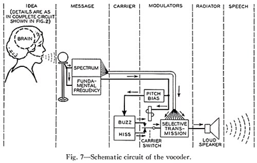
Bell Labs, lata 30. XX wieku. Pierwszy schemat maszyny, która rozumiała, że głos to nie dźwięk, lecz informacja.
Pomysł był elegancki w swej brutalności - zamiast przesyłać cały sygnał dźwiękowy, urządzenie rozkładało głos na podstawowe składowe. W tym przypadku m.in. na ton podstawowy i tzw. obwiednię widmową. Następnie przesyłało wyłącznie te parametry, które po drugiej stronie składało się z powrotem w ludzki głos.
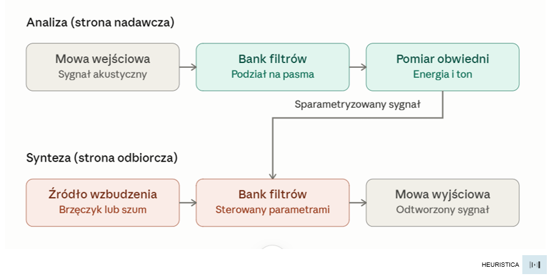
Jak działa Vocoder? Strona nadawcza nie przesyła dźwięku, tylko jego parametry: z jakiego pasma, ile energii, jaki ton. Strona odbiorcza składa głos od zera na podstawie tych danych.
Używając analogii – przypominać to może wysłanie komuś rentgenowskiego zdjęcia szkieletu, by na tej podstawie odtworzył wygląd całej postaci. Brzmi być może nieco upiornie – czyli jak zepsuty robot. Ale o dziwo – to nawet działa!
Wojsko wypuszcza vocoder na wolność
Zaraz po wojnie technologia Vocodera wyskakuje poza laboratoria i trafia tam, gdzie nikt się tego raczej nie spodziewał – czyli na scenę. Muzycy odkrywają, że to "upiornie brzmiące urządzenie" ma to coś, co może zwiększać oryginalność utworu. Kraftwerk buduje na tym brzmieniu zupełnie nowy gatunek. Giorgio Moroder używa go w produkcjach dla Donny Summer, a lata później Daft Punk zrobił z niego swój znak firmowy.
Mechanizm był wciąż ten sam co w Bell Labs – tyle że o 180 stopni odwrócony został cel. Zamiast ukrywać, że głos przechodzi przez maszynę, teraz to właśnie stało się jego istotą.
Kraftwerk, "The Robots", 1978. Vocoder nie jako narzędzie kompresji, ale manifest estetyczny. Głos ludzki przefiltrowany przez maszynę, aż przestaje być ludzki. I o to chodzi!
W tym miejscu też pojawia się ciekawy wzorzec, który powracać będzie przez historię technologii głosowych - to, co inżynierowie traktowali jako problem do rozwiązania, artyści zamieniali w estetykę. Zniekształcenie stawało się stylem, a usterka — nowym gatunkiem muzycznym. Najlepszy przykład? Oczywiście gitarowy Fuzz.
On też ma ciekawą historię. Jest rok 1961, a w studiu w Nashville Grady Martin nagrywa partię basu do utworu Marty'ego Robbinsa "Don't Worry". W pewnym momencie pada transformator w jednym z kanałów konsolety, a sygnał zaczyna się agresywnie zniekształcać.
Obecny na miejscu inżynier Glen Snoddy mógł w tym momencie przerwać sesję i naprawić usterkę. Dźwięk wydał mu się jednak na tyle oryginalny, że szybko odłożył narzędzia. Zaraz potem zbudował prototyp efektu opartego na trzech tranzystorach, który odtwarzał podobne zniekształcenie – tym razem na żądanie.
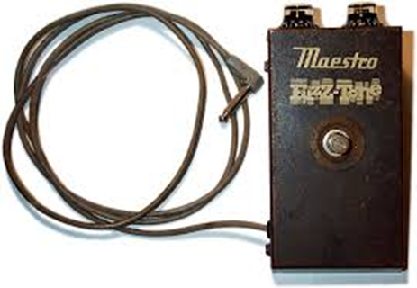
Maestro FZ-1 Fuzz-Tone, 1962. Pierwsza komercyjna wersja przypadkowego odkrycia z Nashville. Trzy tranzystory germanowe w metalowej puszce.
Urządzenie sprzedawało się dosyć marnie. Kiedy jednak cztery lata później Keith Richards użył FZ-1 Fuzz-Tone w riffie otwierającym "Satisfaction" sprzedaż „zniekształcacza” dramatycznie wystrzeliła. W muzyce rozrywkowej zaczęła się nowa epoka.
Wracając zaś do ludzkiego głosu, jego przetwarzanie coraz bardziej nurtowało inżynierów – szczególnie zaś pytanie: czy maszyna może nie tylko przetwarzać głos, ale także go rozumieć?
Czy maszyna może słyszeć?
Dokładnie to pytanie zadawali sobie już w latach 50. Nie chodziło w tym przypadku o przetwarzanie dźwięku, kompresję czy zniekształcenia. Chodziło o coś znacznie trudniejszego: co zrobić, by maszyna nie tylko słyszała słowa, ale też rozumiała, co one znaczą?
Pierwszy poważny krok w tym kierunku zrobił IBM w 1962 roku. Urządzenie nazwano Shoebox, bo tyle mniej więcej zajmowało miejsca, co pudełko na buty. Było już jednak na tyle zmyślne, że potrafiło rozpoznać 16 słów po angielsku – (cyfry od zera do dziewięciu i kilka podstawowych komend). Można więc było powiedzieć do mikrofonu "nine", a Shoebox – tu uwaga…- wyświetlał cyfrę 9!
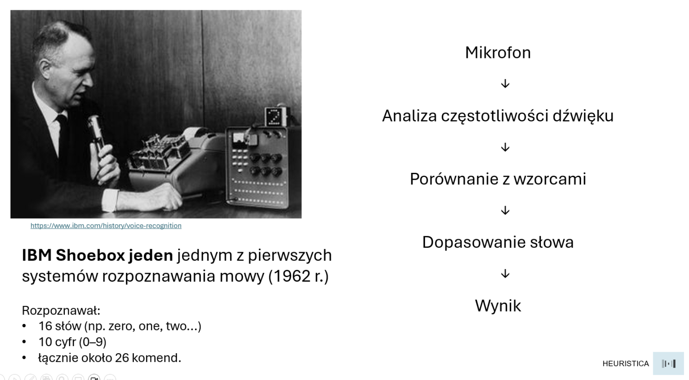
Dziś brzmi to być może zabawnie, ale faktycznie była to mała rewolucja. Shoebox nie porównywał brzmienia słowa z nagraną próbką niczym prymitywny dyktafon, ale analizował częstotliwości akustyczne, wyciągał z nich charakterystyczne cechy i dopasowywał je do wzorców. I to okazało się zalążkiem podejścia, które przetrwa całe dekady.
Problem polegał na tym, że Shoebox działał wyłącznie dla jednego głosu w otoczeniu, i to bez konkurujących dźwięków, wyłącznie po angielsku i z bardzo wyraźną dykcją. Wystarczyło więc zmienić mówcę albo dodać nieco szumu w tle, a system przestawał właściwie działać. Maszyna niby "słyszała", ale tylko wybrane słowa i tylko w idealnych warunkach laboratoryjnych.
DARPA zakasuje rękawy
Na przełomie lat 60. i 70. zmienia się skala. Agencja DARPA (tak, dokładnie ta sama, która sfinansowała internet) postanawia na poważnie zaatakować kwestię rozpoznawania mowy. I tak w roku 1971 rusza program Speech Understanding Research, z pokaźnym budżetem i sporymi ambicjami. Bo cel był konkretny – zbudować system, który zrozumie mowę – ale nie tylko pojedyncze słowa, ale też mowę ciągłą, ze słownikiem tysięcy wyrazów wypowiadanych przez różnych ludzi.
Tego rodzaju wyzwanie wymagało połączenia trzech rzeczy: analizy akustycznej, gramatyki i znaczenia słów. Żadne z dotychczasowych podejść nie potrafiło sobie z tym dotychczas poradzić. Zadanie zajęło pięć lat eksperymentów prowadzonych przez konkurujące ze sobą zespoły badawcze. Było jednak warto, bo wynik wyznaczył sposób myślenia o rozpoznawaniu mowy na następne ćwierć wieku. Wynikiem tym była zaś architektura:
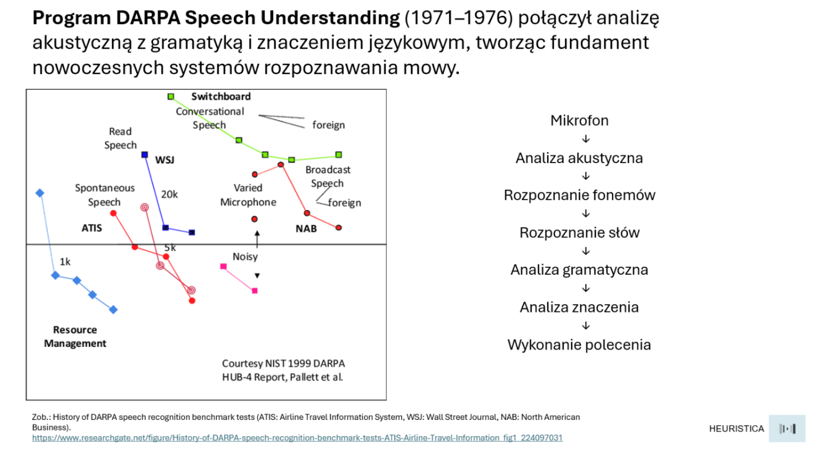
I właśnie w ten sposób wyznaczono nowy paradygmat przechodzenia od dźwięku do sensu. I choć dziś wyglądać to może na oczywistą oczywistość, to w roku 1976 był to realny przełom.
Ukryte stany i sekwencje
Lata 80. Przynoszą kolejne narzędzie – tym razem statystyczne, które zdominuje szybko całą dziedzinę na ponad dwadzieścia lat: Hidden Markov Model, czyli „Ukryty model Markowa”.
Pomysł był to następujący: mowa to cała sekwencja, a nie zbiór niezależnych dźwięków. Każdy fonem wynika zaś trochę z poprzedniego i wpływa na kolejny. HMM pozwalały modelować właśnie taką sekwencyjność, traktując mowę jako ciąg "ukrytych stanów", które generują obserwowany sygnał akustyczny.
Chodzi tu w zasadzie o to, że np. słowo "kot" wymawiane przez różnych ludzi brzmi za każdym razem nieco inaczej (głośniej, ciszej, szybciej, z innym akcentem). HMM uczyło się więc nie konkretnego brzmienia, ale rozkładu prawdopodobieństwa tego, jak dane słowo mogłoby brzmieć. I okazało się, że to o to właśnie chodzi...
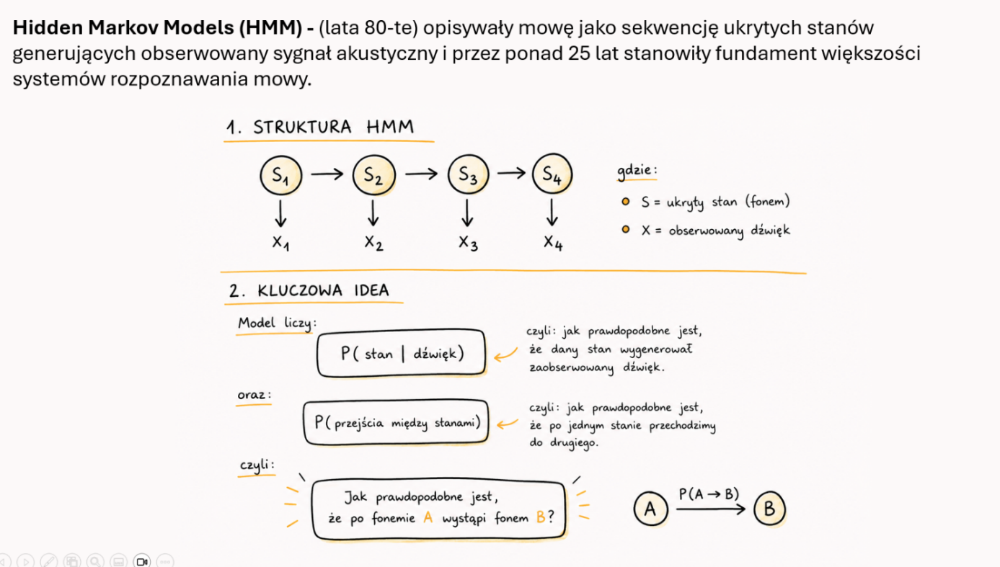
W ten sposób przez kolejne dekady HMM były rdzeniem niemal każdego komercyjnego systemu rozpoznawania mowy: od dyktafonów, przez call center, po pierwsze systemy nawigacji samochodowej.
Kolejną znaczącą rewolucję przynoszą w rozumieniu i generowaniu mowy sieci neuronowe – zmieniają one wszystko w tym obszarze. Zanim jednak do tego dojdziemy, warto cofnąć się o kilka lat i przyjrzeć przez chwilę drugiej stronie równania – nie temu jak maszyna słyszy, ale temu jak maszyna mówi.
Czy maszyna może gadać?
Na długo przed tym, zanim komputery nauczyły się słuchać, wielu inżynierów i wynalazców próbowało nauczyć je mówić. I tu historia zaczyna się jeszcze wcześniej, bo w XVIII wieku na dworze habsburskim.
Wolfgang von Kempelen - węgierski wynalazca działający w służbie cesarzowej Marii Teresy - zasłynął z dwóch rzeczy. Pierwszym był słynny automat szachowy zwany Turkiem. Przez całe dekady zadziwiał on europejskie dwory pokonując kolejnych mistrzów. Sekret był prozaiczny - w środku siedział człowiek.
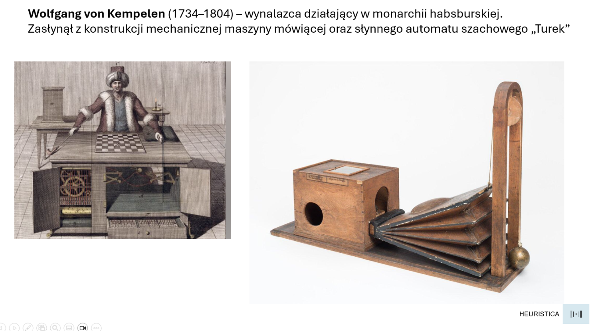
Jednak druga konstrukcja von Kempelena była na wskroś autentyczna i rzeczywiście działała. Była nią właśnie mechaniczna maszyna mówiąca, zbudowana z mieszków powietrznych, rezonatorów i klap. Konstrukcja była na tyle misterna, że maszyna potrafiła wymawiać sylaby i proste słowa.
Nie brzmiało to do końca jak ludzki głos, ale coś pomiędzy dźwiękiem kościelnych organów a kichającym kotem. Zasada była jednak słuszna - głos można wytworzyć mechanicznie, z komponentów – o ile tylko rozumiemy jego fizyczną strukturę. I dokładnie ta intuicja powróci po 200 latach.
E.T chce dzwonić do domu…
Właśnie w 1978 Texas Instruments wprowadza na rynek Speak & Spell - plastikową zabawkę edukacyjną dla dzieci. Urządzenie potrafiło wymawiać słowa i prosiło dziecko o ich przeliterowanie. Można by więc rzec – ot, kolejna igraszka.
Jednak pod plastikową obudową działała tu przełomowa jak na owe czasy technologia. Bo właśnie Speak & Spell był jednym z masowych gadżetów z elektroniczną syntezą mowy opartą na LPC (Linear Predictive Coding). Zamiast odtwarzać nagrane próbki ludzkiego głosu aparat modelował matematycznie tor głosowy człowieka, przewód głosowy, język, wargi i na tej podstawie generował dźwięk na bazie tych parametrów. Mówić zaś wprost: głos nie był tu nagrany i odtwarzany - był obliczony.
Brzmienie było bardzo charakterystyczne - nieco nosowe, nieco mechaniczne - ale co najważniejsze – zrozumiałe! I co być może jeszcze ważniejsze - mieściło się w małym układzie scalonym. Był to więc dowód, że synteza mowy może być tania, przenośna i dostępna.
Speak & Spell sprzedał się w milionach egzemplarzy. Dzieci uczyły się dzięki niemu pisowni, a inżynierowie nagle nauczyli się, że synteza mowy to… całkiem spory rynek.
Microsoft Sam i miliony słuchaczy
Doskonale wyczuł to Bill Gates – bo jeśli oczyma wyobraźni przeskoczmy do 1998 roku to zobaczymy znowu beżowe obudowy komputerów, modemy dial-up i logo Windows 98. To właśnie wtedy Microsoft wprowadza do swojego systemu operacyjnego syntezator mowy o wdzięcznej nazwie Sam. To był pierwszy głos, który usłyszały dziesiątki milionów użytkowników komputerów osobistych na całym świecie.
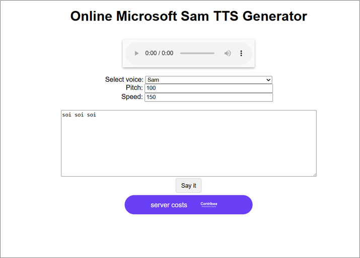
Tu można kliknąć i posłuchać, jak brzmiał Sam
Sam używał tej samej techniki formantowej syntezy mowy co Speak & Spell. Generował dźwięk matematycznie - bez nagranych wcześniej próbek. Działał lokalnie, bez dostępu do internetu, na zwykłym procesorze. Używany był w czytnikach ekranowych, aplikacjach edukacyjnych oraz programach wspomagających osoby z niepełnosprawnościami.
Brzmiał mocno robotycznie, ale nikomu to za bardzo nie przeszkadzało – grunt, że robił swoją głosową robotę.
Człowiekiem, który wcześniej spopularyzował ten głos, był Stephen Hawking, który sam stracił głos wskutek choroby. Hawking używał przez lata właśnie syntetyzatora formantowego – można powiedzieć duchowego przodka tej samej technologii. Ciekawostką jest to, że tak bardzo zżył się z tym konkretnym, mechanicznym brzmieniem, że gdy zaoferowano mu nowocześniejszy i bardziej "ludzki" głos - odmówił. Tamten głos stał się więc nie tylko częścią jego wizerunku, ale nawet tożsamości.
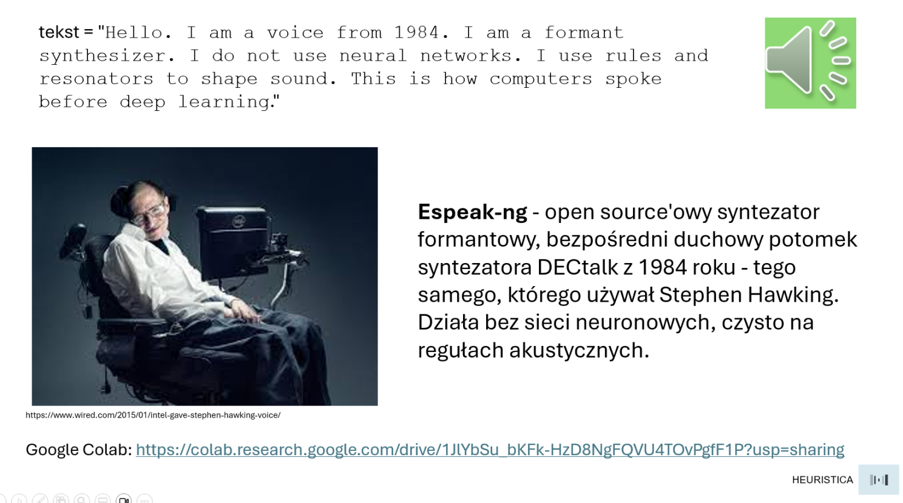
Link do notatnika Colab z Espeak-ng
Sieć sztucznych neuronów uczy się czytać
Cofnijmy się jednak do roku 1987. Jest to data przełomowa – właśnie wtedy na Uniwersytecie Kalifornijskim Terry Sejnowski i Charles Rosenberg publikują wyniki swojego eksperymentu z siecią neuronową o nazwie NETtalk.
Zadanie było pozornie proste – jak nauczyć komputer zamieniać tekst angielski na fonemy, czyli na zapis wymowy? I to nie przez ręcznie programowane reguły, nie przez słowniki wyjątków, ale przez uczenie maszynowe w oparciu o przykłady.
Sieć neuronowa, jaką do tego celu stworzyli zaczynała początkowo od zupełnego bełkotu. Po kilku iteracjach treningu zaczynała wytwarzać coś, co brzmiało jak mowa małego dziecka, rytm był już wyczuwalny choć słowa jeszcze nie do końca. Jednak już po dwudziestu iteracjach sieć wymawiała słowa poprawnie. Później zaś mogła czytać nowy tekst, którego wcześniej nie widziała, i radziła sobie z nim zaskakująco dobrze.
NETtalk nie był jeszcze gotowym produktem. Był jednak czymś ważniejszym – dowodem na to, że sieć neuronowa może odkryć reguły języka samodzielnie, bez żadnego programisty, który je koduje. Co ciekawe, był to jednocześnie sygnał, który znaczna większość środowiska początkowo… zlekceważyła. Właściwy moment miał przyjść dopiero dwie dekady później.
Głębokość sieci wszystko zmienia…
Przez ponad dwie dekady systemy rozpoznawania mowy działały zgodnie z tym samym wzorem: akustyka, fonemy, słowa, gramatyka, krok po kroku, warstwa po warstwie. HMM robiły swoje, wyniki powoli się poprawiały, ale postęp był mozolny i każdy krok wymagał ręcznej pracy inżynierów.
Później jednak nastąpiło coś, co badacze opisują jako "zmianę fazy" - nie tyle ewolucja, co nagłe przejście w inny stan skupienia.
W 2012 roku głębokie sieci neuronowe wdzierają się mocno na terytorium rozpoznawania mowy i w ciągu zaledwie kilku lat „rozmontowują” trzydziestoletni dorobek systemów statystycznych w stylu HMM. Powód jest jeden – działają w tych zadaniach znacząco lepiej.
Mechanizm był tu pozornie prosty w koncepcji, ale horrendalnie trudny w implementacji. Bo teoretycznie zamiast ręcznie projektować każdy etap przetwarzania można by przecież wpuścić do sieci surowy sygnał akustyczny z jednej strony, a tekst z drugiej. Sieć zaś powinna sama odkryć, jakie kombinacje i transformacje trzeba po drodze wykonać. Nie tłumaczymy jej wtedy regułowo czym jest fonem, czym jest sylaba. Ona to sama wydedukuje, jeśli tylko nakarmimy ją wystarczająco dużą ilością danych i zapewnimy czas obliczeniowy. Gdyby to zadziałało, to byłoby to niczym zastąpienie tysiąca ręcznie narysowanych map jednym satelitą.
Whisper: głos internetu jako nauczyciel
Dzięki coraz lepszym kartom graficznym i nowym architekturom sieci stało się to w końcu możliwe technicznie i obliczeniowo. I tak oto w 2022 roku OpenAI publikuje Whisper - model automatycznego rozpoznawania mowy wytrenowany na tysiącach godzin wielojęzycznych danych wykopanych z internetu.
A dokładnie na 680 tysięcach godzin – czyli gdybyśmy chcieli przesłuchać te wszystkie pliki audio, to słuchalibyśmy (non stop) przez ponad 77 lat.
Poprzednie systemy trenowane były na starannie przygotowanych, ręcznie transkrybowanych zbiorach danych w warunkach laboratoryjnych. Whisper uczył się na tym, co ludzie faktycznie nagrywają i publikują w sieci – czyli na podcastach, wykładach, wywiadach, filmach z różnych krajów, z różnym szumem w tle, z różnymi akcentami, z przerywaniami i całym dodatkowym bełkotem.
I właśnie dlatego okazało się, że może działać inaczej niż wszystko przed nim. Bo może sobie radzić z akcentem szkockim, brazylijskim czy portugalskim. Radzi sobie z tłem odgłosów kawiarnianych. Radzi sobie nawet ze specjalistycznym słownictwem medycznym i technicznym — a wszystko dlatego, że w tych 680 tysiącach godzin na pewno był np. jakiś podcast o medycynie czy jakiś wykład o inżynierii.
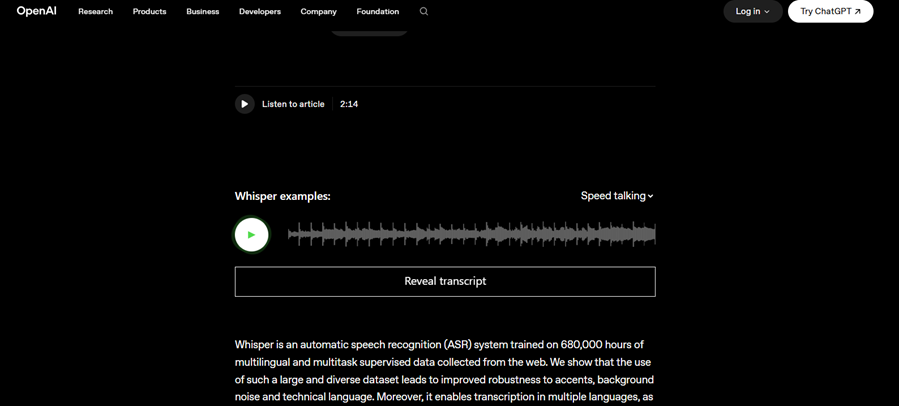
Architektura była tu celowo prosta: transformer encoder-decoder - czyli ten sam rodzaj mechanizmu uwagi, który stoi za dużymi modelami językowymi. Surowy dźwięk wchodzi z jednej strony, a tekst wychodzi z drugiej. To co także ciekawe, to fakt, że cały kod i wagi modelu OpenAI udostępnia – nomen omen - jako open source.
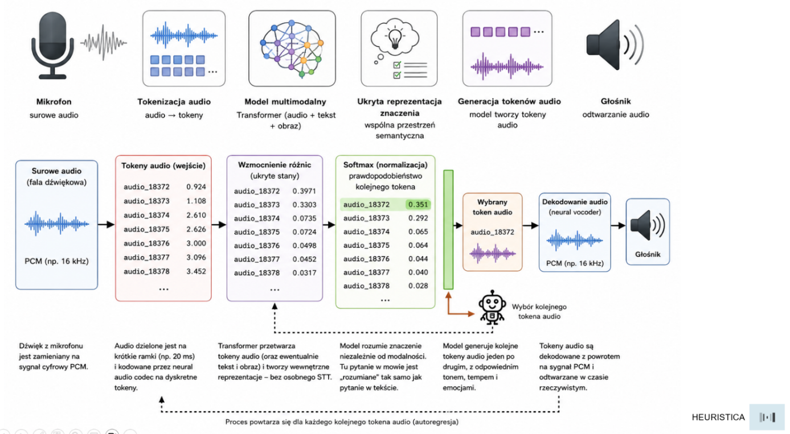
Whisper staje się tym samym fundamentem, na którym zbudowano setki i tysiące podobnych narzędzi. Do dziś jest też jednym z najczęściej używanych modeli STT (speech-to-text) na świecie.
Architektura kaskadowa i jej granice
W tym momencie zaczynamy też widzieć obie strony równania. STT zamienia mowę w tekst. LLM przetwarza ten tekst i generuje odpowiedź. Analogiczne modele TTS (text-to-speech) zamieniają z kolei odpowiedź z powrotem w mowę. Łącząc je zaś ze sobą mamy słyszącego i mówiącego voice agenta.
Tego rodzaju rozwiązania to architektura kaskadowa. I właśnie ona przez kilka ostatnich lat była stanem sztuki.
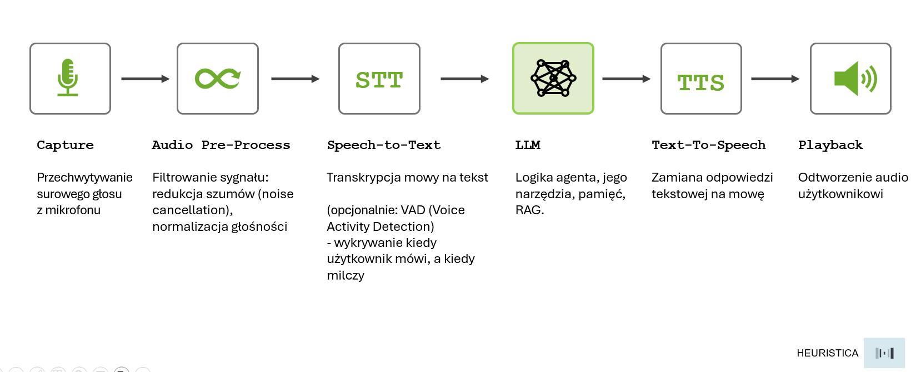
Takie podejście działa też pod wieloma względami całkiem dobrze. Ma jednak fundamentalną wadę, którą odczuwamy natychmiast w praktyce.
Każde przejście między warstwami oznacza dodatkowe opóźnienie. STT potrzebuje kilku chwil, LLM kolejnej chwili na wygenerowanie odpowiedzi, a TTS następnej. Łącznie zajmuje to dwie–trzy sekundy. Życiowa prawda jest jednak taka, że w rozmowie telefonicznej lub przy okienku bankowym dwie sekundy ciszy to przecież wieczność. Rozmówca zaczyna myśleć, że połączenie się urwało, albo… no właśnie – coś zaczyna sobie myśleć.
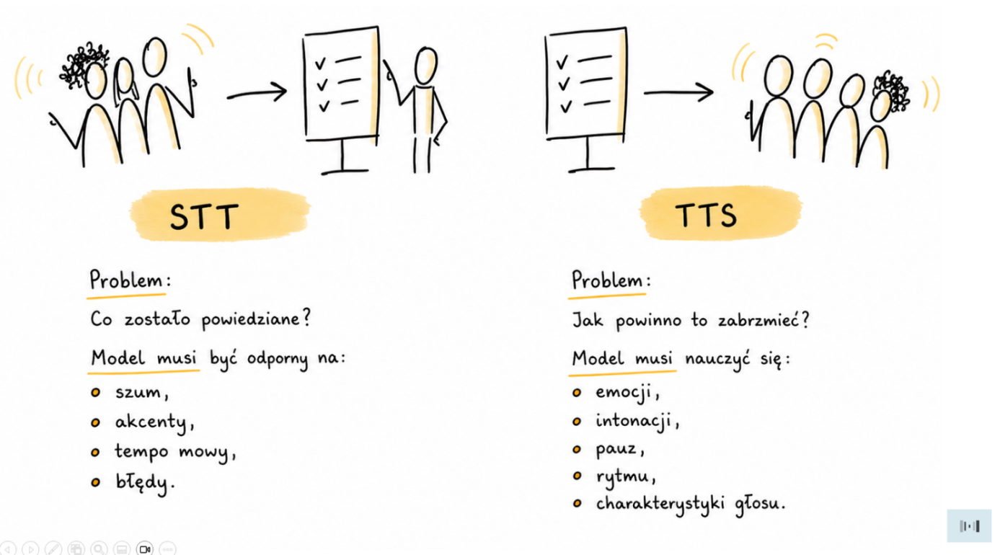
Do tego dochodzi kolejny problem – być może nawet głębszy. STT zamienia mowę w tekst i przy okazji „ignoruje” wszystko, co nie jest słowami: ton głosu, tempo, wahanie się przed odpowiedzią, śmiech, ironię czy stres zawarte w tembrze głosu. Wszystko to bezpowrotnie znika w momencie transkrypcji i do LLM dociera już wyłącznie suchy tekst.
Wystarczy sobie przypomnieć, jak ktoś np. mówi do nas „wszystko w porządku” spokojnym głosem, a potem wypowiada to samo łamiącym się głosem, po długiej pauzie. Tekst niby identyczny — znaczenie jest jednak zupełnie inne.
Architektura kaskadowa okazuje się zaś zupełnie ślepa na tego rodzaju różnice.
Koniec pośredników!
Problemy te i sposoby ich obejścia doprowadziły badaczy do pytania, które wydawało się przez długi czas zbyt ambitne: a gdyby tak wyrzucić tekst jako pośrednika?
Jest pytanie – jest odpowiedź. Okazuje się, że to jak najbardziej możliwe. Na podstawie tego właśnie założenia powstały modele voice-to-voice, nazywane też speech-to-speech lub realtime audio models. I te działają zupełnie inaczej.
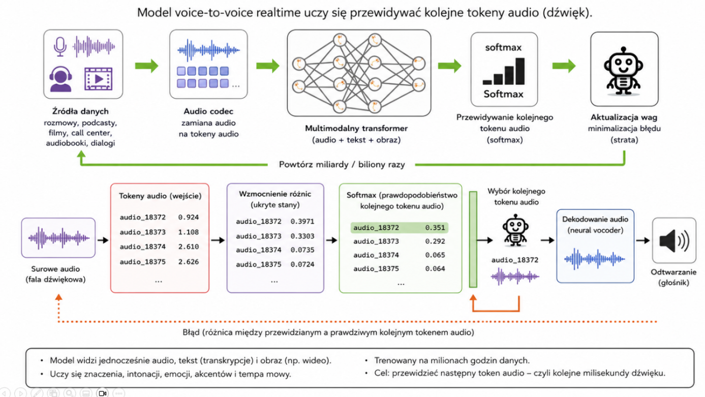
Surowy dźwięk wchodzi jako input i surowy dźwięk wychodzi tu jako output. Model operuje bezpośrednio na reprezentacjach akustycznych, bez zbędnego już teraz etapu transkrypcji i bez etapu syntezy. Słyszeć więc może nie tylko słowa, ale całą warstwę tego, jak są wypowiadane.
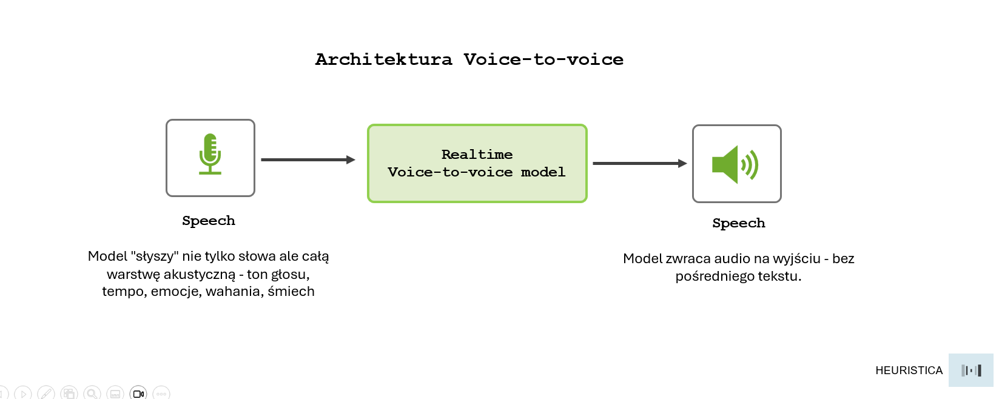
GPT-4o zaprezentowany w maju 2024 roku był pierwszym szeroko dostępnym modelem tego rodzaju - LLM-em, który spopularyzował natywną multimodalną rozmowę audio. Wcześniej istniały co prawda modele speech-to-speech (Meta SeamlessM4T, Google AudioLM, VALL-E itd.), ale nie były powszechnie dostępne jako uniwersalni asystenci.
Demo, w którym model reaguje na emocje w głosie rozmówcy, pyta z niepokojem, czy wszystko w porządku, gdy słyszy wahanie, i śmieje się, gdy rozmówca żartuje, obiega internet w kilka godzin. Bo widać — a w zasadzie słychać — wyraźną różnicę. Rozmowa przestaje brzmieć jak rozmowa z bezdusznym automatem.
Narzędzia, które działają
Voice agenty to dziś już zdecydowanie więcej niż akademicki eksperyment. Są to produkty, które można uruchomić natychmiast: podłączyć je do telefonu, osadzić na stronie www, wpiąć w call center. Przyjrzyjmy się więc chwilę najważniejszym graczom i temu, co dziś faktycznie oferują.
W 2022 roku dwóch naszych rodaków, Mati Staniszewski i Piotr Dąbkowski założyli w Londynie startup, który miał zajmować się technologią głosową. Nikt wtedy nie przypuszczał, że cztery lata później wycena firmy sięgnie 11 miliardów dolarów.
W lutym 2026 ElevenLabs zamknął rundę finansowania na 500 mln USD. Inwestorzy to nie przypadkowe nazwiska: Sequoia, Andreessen Horowitz, ICONIQ. Firmy, które wcześniej stawiały na Airbnb, Stripe i OpenAI. ElevenLabs stworzył cały ekosystem głosowy, który dziś obejmuje wiele warstw:
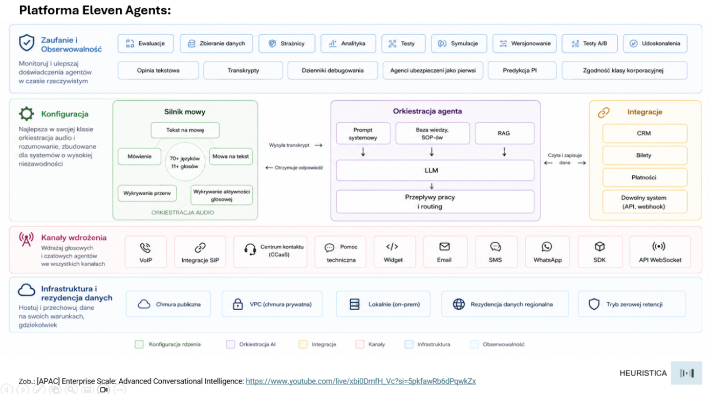
Eleven v3 to jeden z najlepszych obecnie silników TTS na rynku. Obsługuje ponad 70 języków i tysiące głosów. Wyróżnia go rozumienie adnotacji emocjonalnych wpisanych bezpośrednio w tekst. Oznacza to, że zamiast generować neutralny głos i nakładać emocje algorytmicznie, możemy pisać tak:
W starożytnej krainie Eldoria żył smok o imieniu Zephyros. [whispers] Mówiono, że widział narodziny pierwszych gwiazd. [pauses] Pewnego dnia przyszło do niego dziecko z pytaniem. [nervously] Czy smoki naprawdę płaczą? [sighs] Zephyros zmrużył oczy. [giggles] Tylko wtedy... gdy nikt nie patrzy.
Model czyta adnotacje i odpowiednio moduluje głos: szepce, zatrzymuje się, wzdycha, chichoce. I nie jest to postprocessing, tylko część samego procesu generowania.
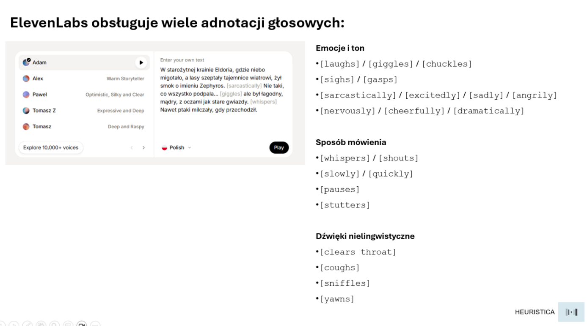
Pełna lista obsługiwanych adnotacji obejmuje emocje, takie jak [laughs], [sarcastically], [excitedly], [sadly], sposób mówienia, taki jak [whispers], [slowly], [stutters] oraz dźwięki nielingwistyczne jak [clears throat], [yawns], [coughs].
Z kolei Scribe to silnik STT od ElevenLabs, transkrypcja z identyfikacją mówców i znacznikami czasowymi. W ekosystemie znajdziemy też ElevenAgents - platformę do budowania głosowych agentów konwersacyjnych. Możemy tu zdefiniować osobowość, podłączyć bazę wiedzy, wybrać głos i model LLM, a platforma zajmuje się całą warstwą głosową.
Jakiś czas temu ElevenLabs uruchomił też Iconic Marketplace. Jest to biblioteka głosów lektorów, aktorów i osobowości dostępnych do licencjonowania. Nie są to klony ani imitacje, ale głosy udostępnione za zgodą ich właścicieli lub spadkobierców.
GPT Realtime API: rozmowa bez opóźnienia
OpenAI poszło nieco inną drogą. Zamiast budować ekosystem narzędzi, postawiło na jeden interfejs do rozmowy w czasie rzeczywistym.
GPT Realtime API daje deweloperom bezpośredni dostęp do modelu voice-to-voice. Żadnego pośredniczącego tekstu, żadnej kaskady STT i TTS. Dźwięk wchodzi i dźwięk wychodzi, a model po drodze rozumie emocje, przerwania, wahania itp.
Okno kontekstu wynosi 16 000 tokenów, co przekłada się na około 20-30 stron tekstu, wystarczająco dużo na długą rozmowę z historią i dokumentem w tle. Czas odpowiedzi jest zaś mierzony w dziesiątkach milisekund.
Na bazie tego API powstał między innymi GPT-Realtime-Translate czyli model zaprojektowany wyłącznie do tłumaczeń ustnych w czasie rzeczywistym. Obsługuje on obecnie ponad 70 języków wejściowych i 13 wyjściowych. Model tłumaczy zanim rozmówca skończy zdanie. Prototyp działającego tłumacza można przetestować tutaj: marek4321-realtime-translator.hf.space
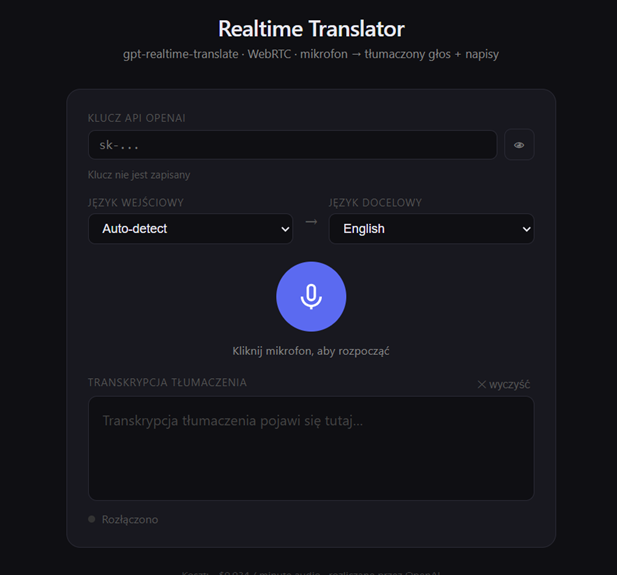
Google nie mogło, rzecz jasna, pozostać w tym wyścigu z boku. Gemini 3.1 Flash Live to model multimodalny, który przetwarza jednocześnie audio i wideo w czasie rzeczywistym. Jest dostępny bezpośrednio w AI Studio pod adresem aistudio.google.com/live.
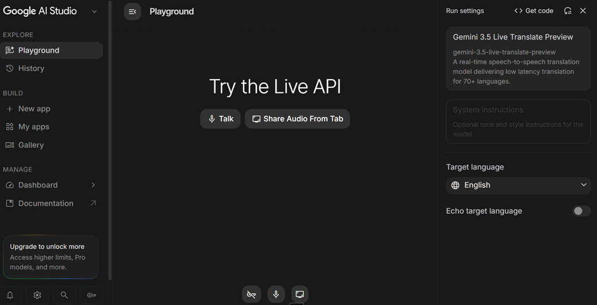
Interfejs ze światem konsumenta
Większość takich modeli ma jeden i ten sam problem — żeby działały w prawdziwym świecie, trzeba je w jakiś sposób podłączyć do rzeczywistości: do telefonu, strony internetowej czy aplikacji mobilnej.
Odpowiedzią jest tu WebRTC - protokół transmisji audio w czasie rzeczywistym – technicznie dostępny dla każdego. Teoretycznie, bo jego konfiguracja, obsługa opóźnień, zarządzanie przerwaniami, integracja z numerami telefonicznymi itp. to poważna praca inżynierska.
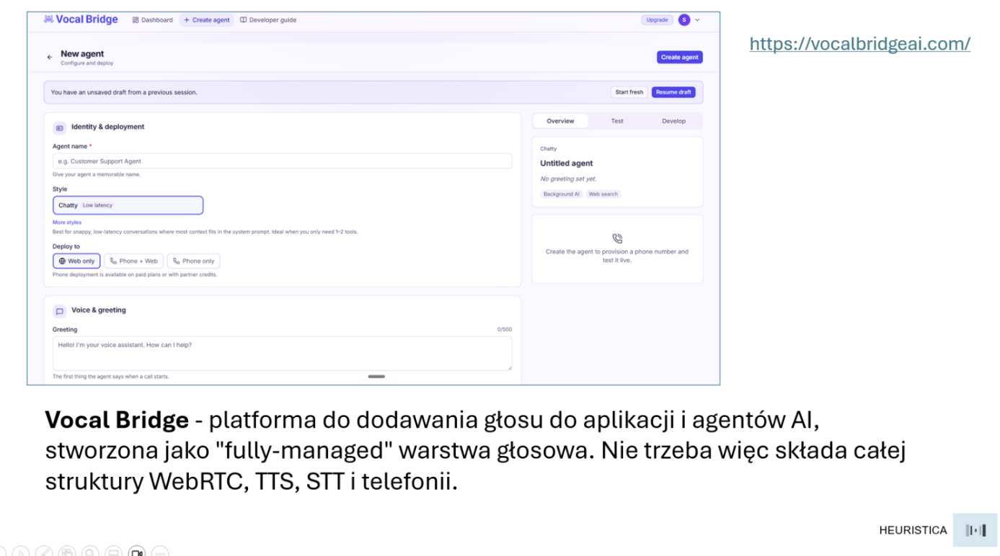
Jako rozwiązanie pojawiają się platformy takie jak Vocal Bridge, które działają jako "fully-managed" warstwa głosowa. Zamiast składać samodzielnie WebRTC, STT, TTS i telefonię, dostajemy w nich jeden interfejs, który zajmuje się tym wszystkim. Definiujemy wtedy agenta, podłączamy np. numer telefonu i agent sam zaczyna odbierać rozmowy. Kolejni pośrednicy zaczynają więc znikać...
Zamiast zakończenia
Kończąc ten krótki przegląd historii technologii przetwarzania głosu mam wrażenie, że nie tyle jest to pasmo kolejnych „przełomów”, ile historia znikania kolejnych pośredników.
Najpierw zniknęły kable i ograniczenia przepustowości. Później reguły zapisane przez programistów. Dziś znika tekst jako etap pośredni między nami a maszyną.
Być może już niebawem zniknie samo pojęcie „interfejsu”. Z komputerami nie będziemy już pracować ani ich obsługiwać. Przywykniemy do tego, że będziemy z nimi po prostu naturalnie rozmawiać. Być może więc największe przełomy technologiczne nie zachodzą wtedy, gdy pojawia się nowe rozwiązanie czy wynalazek – tylko wtedy, gdy zupełnie przestajemy je zauważać…
Materiały dodatkowe:
Przykład zastosowania Web Speech API — przycisk „Słuchaj treści”.
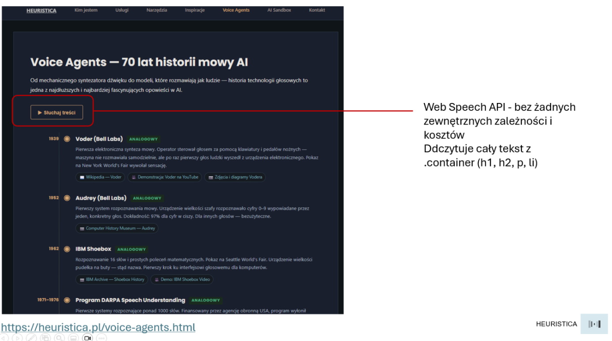
Na tej samej stronie znajdują się też notatniki Google Colab, gdzie można poeksperymentować z omawianymi modelami i architekturami.